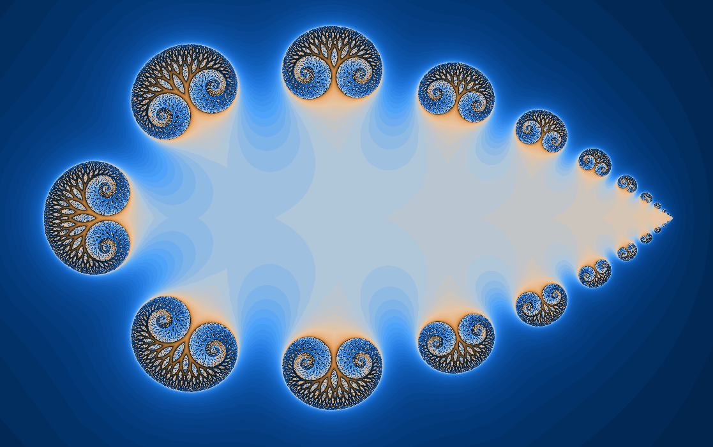
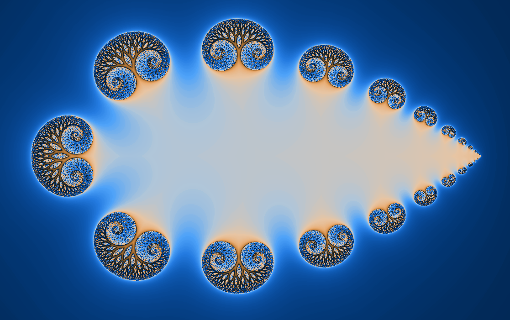
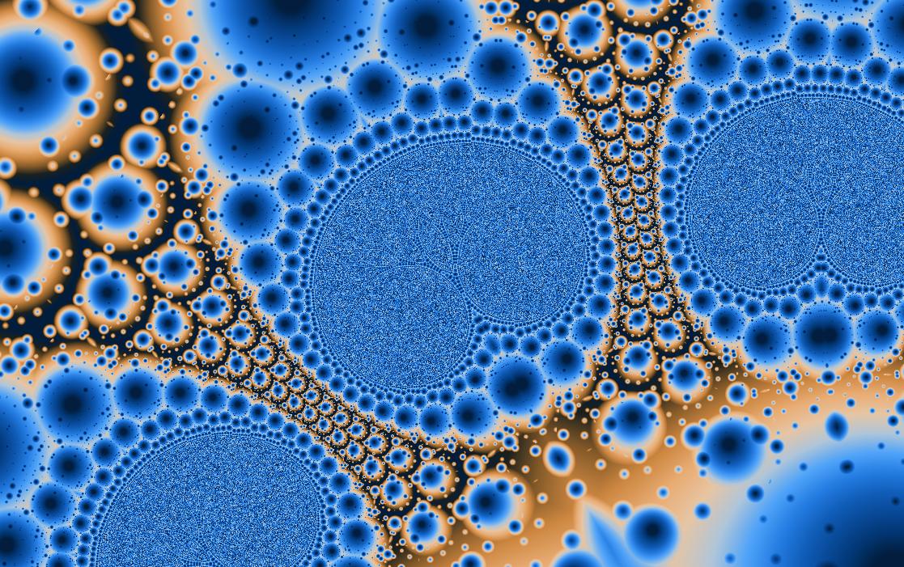
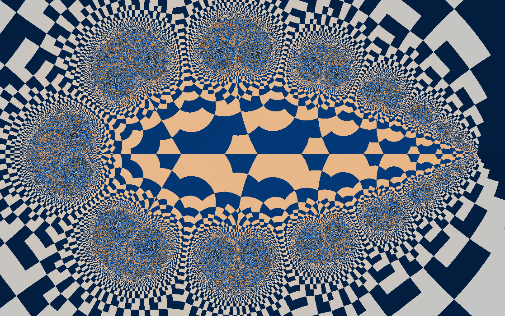
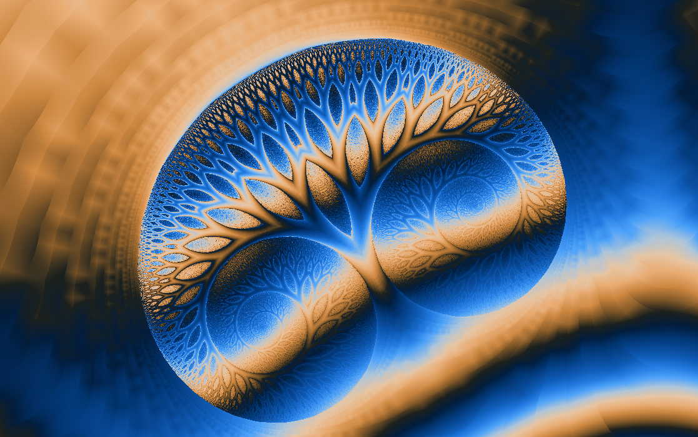
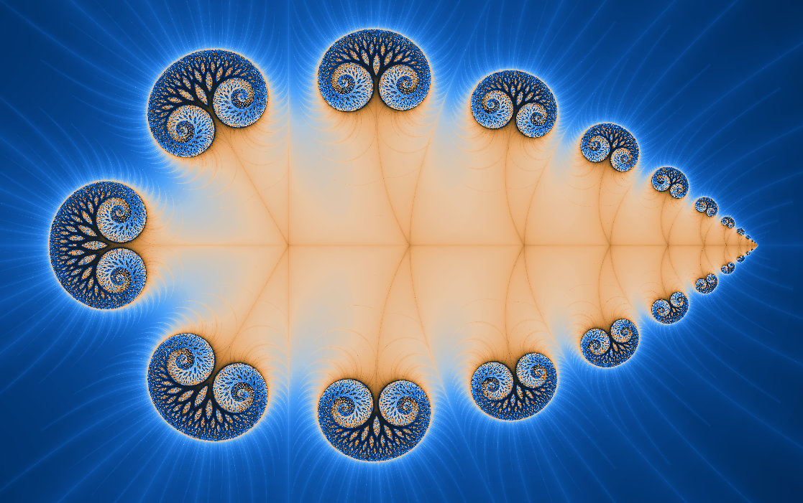

Fractional powers
Jellyfish
A Julia-like map with soft arms from the power \(1.5\).
Jellyfish sits between familiar integer-power worlds. Raising \(z\) to \(1.5\) introduces branch behavior and a different kind of symmetry, giving the image a drifting, tentacled character.

What to try first
Use orbit display near a tendril. Watch for the way the orbit bends through the chosen fractional power.
Try smooth coloring to soften the exterior, then switch to triangle inequality for more visible texture.
Change the constant \(k\) in small steps if the control panel exposes it. This family responds quickly.
Mathematical notes
Why fractional powers feel different
wxChaos iterates \(z_{n+1}=z_n^{1.5}+k\). Integer powers rotate and stretch the plane in whole-number symmetries. A fractional power requires choosing a complex branch, so the visual structure can open into cuts, fans, and asymmetric arms.
Coloring lenses
The set stays the same, but each rendering method asks a different question about the orbit.


Gaussian integer
Measures how closely escaping orbits pass near the complex integer lattice.
Apply in wxChaos

Triangle inequality
Turns relationships inside the orbit into layered, topographic texture.
Apply in wxChaos
Orbit traps
Colors points by how closely their orbits pass near a chosen trap shape.
Apply in wxChaos